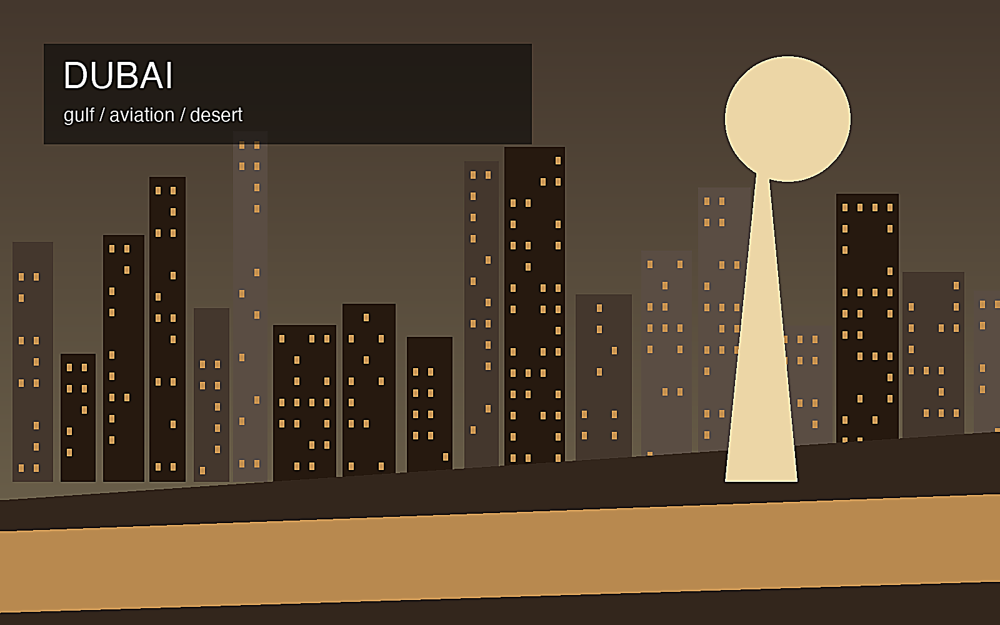

地政学
ペルシャ湾とインド洋経済を結ぶ中継点で、空港、港湾、自由貿易、観光が都市戦略の中心。

🇦🇪 アラブ首長国連邦 / アジア / World City Atlas
湾岸の航空・港湾・不動産都市。世界都市として、経済規模だけでなく、地理、産業、宗教文化、暮らし、観光を分けて読みます。
都市の骨格
ペルシャ湾とインド洋経済を結ぶ中継点で、空港、港湾、自由貿易、観光が都市戦略の中心。
ペルシャ湾とインド洋経済を結ぶ中継点で、空港、港湾、自由貿易、観光が都市戦略の中心。
航空、港湾、金融、観光、不動産、展示会産業が主力で、多国籍労働者が都市を支える。
イスラム文化を基盤に、外国人居住者の教会、寺院、グルドワラも存在する。
超高層ビル、スーク、マリーナ、巨大モール、砂漠ツアーが、空調都市と湾岸商業を見せる。
Geography
都市の経済力は、地図上の位置、港湾、鉄道、空港、河川、周辺都市との関係から生まれます。
ペルシャ湾とインド洋経済を結ぶ中継点で、空港、港湾、自由貿易、観光が都市戦略の中心。
ドバイを単体の市街地としてではなく、周辺の住宅地、産業地、物流施設、教育機関と接続した都市圏として見ると、GDPの大きさが日々の通勤、土地利用、観光、文化施設の配置にどう表れているかが分かります。
航空、港湾、金融、観光、不動産、展示会産業が主力で、多国籍労働者が都市を支える。
この都市では、華やかな中心業務地区の背後に、清掃、建設、配送、調理、介護、教育、保守、警備といった日常的な労働があります。都市の経済規模を見るときは、数字だけでなく、その数字を支える人と場所を同時に見る必要があります。
Industry
主力産業だけでなく、周辺の小さな仕事が都市を毎日動かしています。
Culture
宗教施設、祭礼、市場、劇場、大学、移民地区は、都市の経済とは別の時間を保存します。
イスラム文化を基盤に、外国人居住者の教会、寺院、グルドワラも存在する。
超高層ビル、スーク、マリーナ、巨大モール、砂漠ツアーが、空調都市と湾岸商業を見せる。